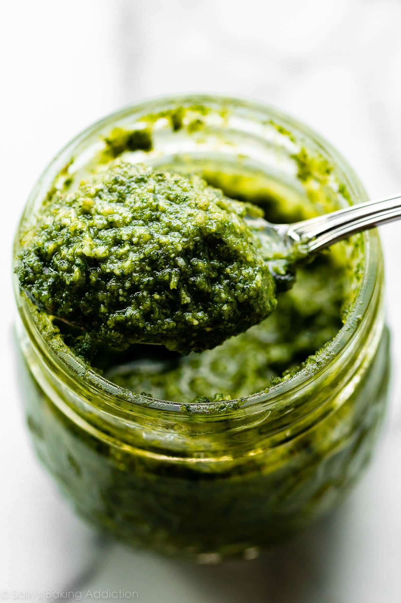

Odin Recipes Home
Pesto recipe

Description
Pesto is a traditional Italian sauce made from fresh basil,
garlic, pine nuts, Parmesan cheese, and olive oil.
It has a rich, aromatic flavor and is commonly used
with pasta, bread, or as a topping for various dishes.
Ingridients
- Fresh basil leaves
- Olive oil
- Pine nuts
- Parmesan cheese
- Garlic
- Salt
- Black pepper
Preparing
- Wash and dry the fresh basil leaves.
- Peel the garlic cloves.
- Blend basil, garlic, and pine nuts together.
- Add grated Parmesan cheese.
- Slowly pour in olive oil while blending.
- Season with salt and black pepper to taste.